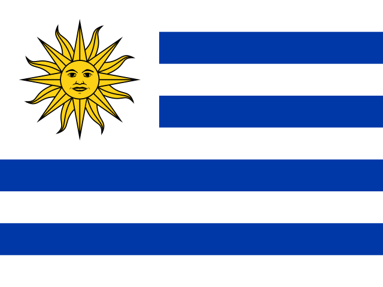

 Argentina8 goals
Argentina8 goalsThe beginning
of everything.
Uruguay hosted the first FIFA World Cup in 1930. Thirteen teams took part, and all 18 matches were played in Montevideo. The hosts, already twice Olympic champions, went on to win the inaugural title against their neighbours Argentina.
Only four European teams made the long Atlantic crossing. In Montevideo's southern winter, early games used smaller grounds while the Estadio Centenario was being completed. Its opening gave the new competition a vast stage and the home crowds a place to gather behind Uruguay.
France's Lucien Laurent scored the first goal in World Cup history against Mexico. Argentina's Guillermo Stábile then emerged as the tournament's leading scorer, while Uruguay won its group and built its campaign around captain José Nasazzi and midfielder José Leandro Andrade.
Argentina and Uruguay each won their semi-final 6–1, setting up a final between long-standing rivals from either side of the Río de la Plata. Argentina led 2–1 at half-time, but Uruguay's second-half attack overturned the match at the Centenario.
Goals from Pedro Cea, Victoriano Iriarte and Héctor Castro completed a 4–2 win. Uruguay became the first world champion, and a dramatic local rivalry gave the new tournament a memorable opening chapter.